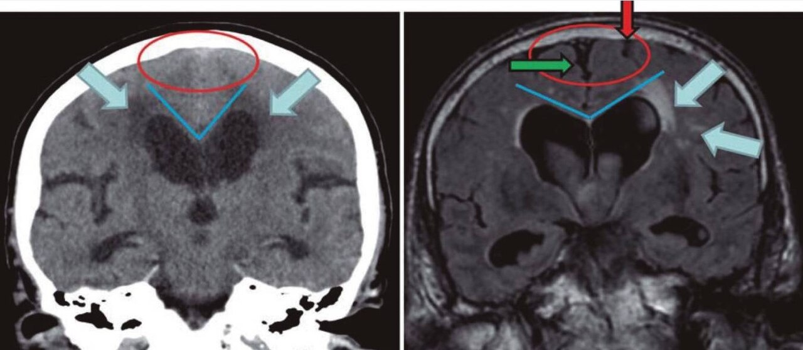

Ficha del catálogo
Hidrocefalia crónica del adulto
- Sistema
- Nervioso
- Modalidad
- RM
- Región
- Sistema ventricular y espacios subaracnoideos
- Dificultad
- Avanzado
La hidrocefalia crónica del adulto es un trastorno de la dinámica del líquido cefalorraquídeo con ventriculomegalia y presión de apertura dentro de límites normales. Cursa con alteración de la marcha, deterioro cognitivo e incontinencia urinaria, y su interés radica en que una parte de los pacientes mejora tras la derivación.
Técnica
Resonancia magnética con secuencias volumétricas T1, T2, FLAIR y estudio del flujo del líquido cefalorraquídeo en el acueducto. Los planos coronales perpendiculares a la comisura posterior son necesarios para medir el ángulo calloso.
Qué observar
- Dilatación ventricular desproporcionada respecto al grado de atrofia
- Ángulo calloso estrecho medido en el plano coronal
- Surcos apretados en la convexidad alta y en la línea media
- Cisuras de Silvio y cisternas de la base amplias
- Vacío de señal acentuado en el acueducto por flujo hiperdinámico
- Ausencia de una causa obstructiva que explique la dilatación
Hallazgos
Los ventrículos laterales y el tercer ventrículo están dilatados con aspecto redondeado, mientras que los surcos de la convexidad superior aparecen comprimidos y los espacios de la base y las cisuras de Silvio se ven ensanchados. El ángulo que forman las paredes mediales de los ventrículos laterales bajo el cuerpo calloso, medido en el plano coronal, resulta estrecho. Suele existir un vacío de señal marcado en el acueducto por el flujo aumentado. Es frecuente encontrar además hiperintensidades de sustancia blanca por enfermedad de pequeño vaso.
Perlas
La combinación de ventrículos dilatados con surcos apretados en la convexidad alta y cisuras de Silvio amplias es más específica que la simple medida del índice ventricular, porque distingue esta entidad de la ventriculomegalia por atrofia, en la que todos los surcos están ensanchados. La imagen apoya la sospecha pero no sustituye a las pruebas clínicas de respuesta a la sustracción de líquido cefalorraquídeo.
Diagnóstico diferencial
- Ventriculomegalia por atrofia
- Todos los surcos están ensanchados de forma proporcionada y el ángulo calloso es amplio.
- Hidrocefalia obstructiva
- Existe una lesión que bloquea la circulación, con dilatación selectiva por encima del punto de obstrucción y edema transependimario.
- Hidrocefalia posthemorrágica o posmeningítica
- Antecedente conocido y con frecuencia signos de aracnoiditis o de restos hemáticos en las cisternas.
- Enfermedad neurodegenerativa con dilatación ventricular
- Predomina el patrón de atrofia regional acorde con el síndrome clínico y no hay desproporción de los espacios subaracnoideos.
Simuladores
- Asimetría ventricular constitucional
- Dilatación ventricular por infarto o por pérdida de volumen focal
- Artefacto de flujo en el acueducto que exagera el vacío de señal
Por modalidad
- TC
- Muestra la ventriculomegalia y descarta causas obstructivas, y es útil en el seguimiento de portadores de derivación.
- RM
- Permite medir el ángulo calloso, valorar los espacios subaracnoideos y estudiar el flujo del líquido cefalorraquídeo.
Protocolo
Volumétrica T1, T2 en tres planos, FLAIR y estudio de flujo en el acueducto, con un plano coronal perpendicular a la comisura posterior para medir el ángulo calloso de forma reproducible (conviene comparar siempre con estudios previos).
Clasificación
Se describe el patrón de desproporción entre los espacios subaracnoideos, con surcos comprimidos en la convexidad alta y cisuras amplias en la base, hallazgo que se considera un apoyo relevante para el diagnóstico y que se valora junto con la clínica y las pruebas de sustracción de líquido cefalorraquídeo.
Errores frecuentes
- Diagnosticar solo por la dilatación ventricular sin valorar los surcos de la convexidad
- Medir el ángulo calloso en un plano coronal mal orientado
- Olvidar descartar una causa obstructiva antes de asumir el diagnóstico

hidrocefalia crónica del adulto ángulo calloso ventriculomegalia trastorno de la marcha líquido cefalorraquídeo derivación ventricular